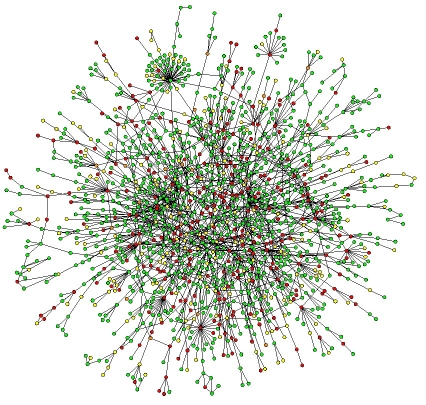
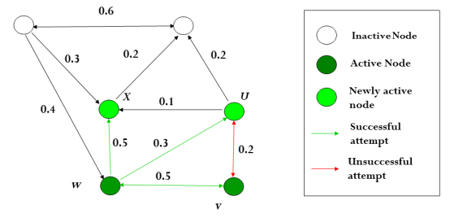

Projects
Research on Network-Based Approach to Human Disease (In Progress)
Research on Social Networks Analysis (In Progress)
Design and Implementation of a Signal Generator with Variable SNR at 40 MHz Frequency, Using DDS to Generate All Waveforms (In Progress)
Under Supervision of Prof. Khalaj
In this project, I try to uncover functional and potential disease modules in the interactome by clustering or graph partitioning genes. I have merged a statistical algorithm of finding abnormal clusters with Protein-Protein Interaction Networks to find the lethal deletion of proteins in cell. 
Under Supervision of Prof. Khalaj
In this project, I have analysed information flow in social networks considering them as graphs. Information propagation here represents exposure to viruses among the graph. Then by presenting several measures for nodes' importance, I have tried to detect more integrated nodes and protect them against attacks like viruses. I have consider several measures and simulated them so far. The next step is to answer the question of node influence as an optimization problem. This is a paper work that will be submitted in the near future. 
BS. Project, Under Supervision of Prof. Fotowat Ahmady
In this project, my focus is on generating variable SNR for the frequency cognition process in high ranges. I have also deployed and designed the appropriate DDS to generate arbitrary waveforms.